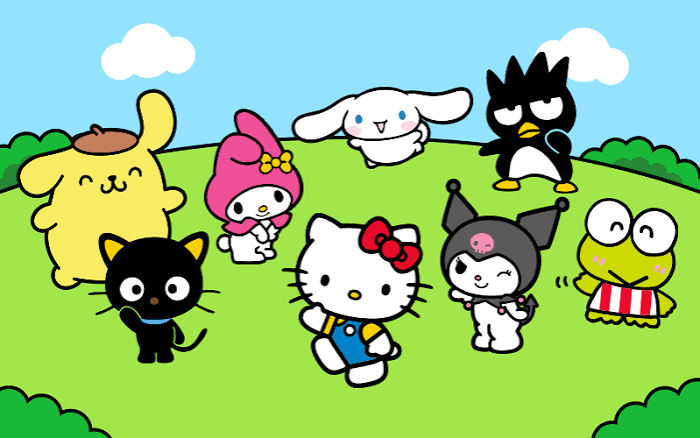

Treino Especial: Neuroanatomia & Fisiologia
Preparado com todo o amor do mundo pelo seu Rafita! São 15 questões essenciais para você gabaritar sua prova de Psicologia. Acertando 80% (12 questões), você desbloqueia o Arquivo Confidencial R.P.D. cheio de mimos e carinho! 💌
Carregando questão...
Você é Incrível, Meu Amor!
Você acertou 14 de 15 questões (93%).
Oi, meu anjinho mais lindo desse universo... Minha zoiuda favorita, minha garotinha e minha princesa! ❤️
Eu sei o quanto a faculdade de Psicologia exige de você e como Neuroanatomia e Neurofisiologia têm nomes complicados, vias neurais infinitas e muito conteúdo puxado. Mas olha para esse resultado aqui: você destruiu nesse simulado!
Você tem a mente mais brilhante e dedicada que eu já vi. Se o Leon S. Kennedy enfrentou Raccoon City inteira com coragem, você encara qualquer prova com esse sorriso maravilhoso e essa doçura de Hello Kitty que me deixa completamente bobo por você.
Confia no seu potencial, minha garotinha. Essa prova já é sua! Domingo tem comemoração e muitos beijinhos do seu fã número 1. Te amo demais, anjinho! 💖